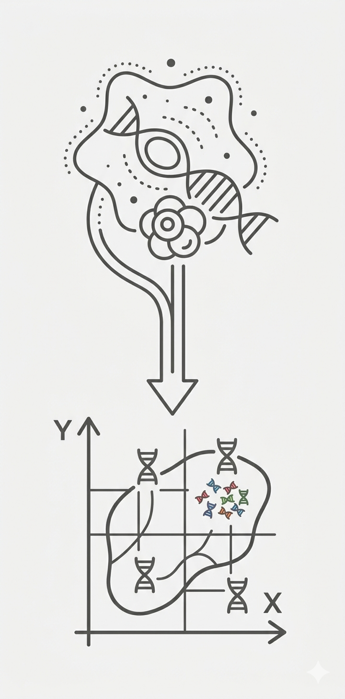
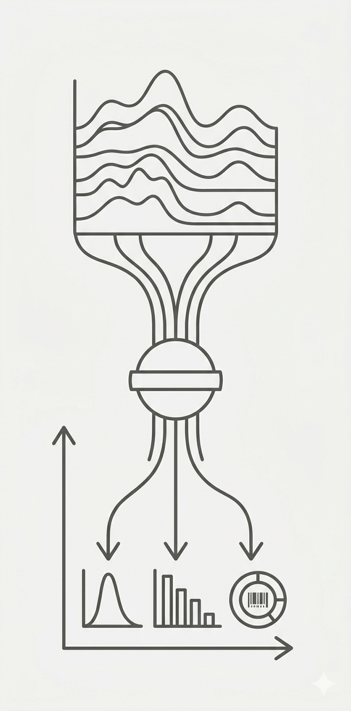
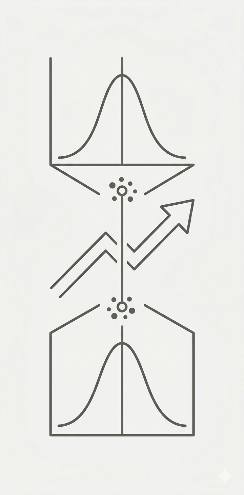

The ultimate goal of our research is to advance biomedical sciences and clinical practices through the development of rigorous and efficient tools. We aim to tackle the challenges presented by modern biomedical "big data", including high-dimensionality, heterogeneity, technical artifacts, and reproducibility, and make sense of the data.

Single-cell RNA sequencing (scRNA-seq) enables the identification of rare cell types and cell type-specific gene expression patterns by measuring individual cells rather than population averages. We develop statistical methods for:

Bulk omics data remain the primary choice for population-level studies due to lower costs. We develop methods to extract cell type-specific information from bulk data—effectively "unmixing the smoothie":

We develop rigorous statistical methods for detecting differential signals in bulk sequencing data: